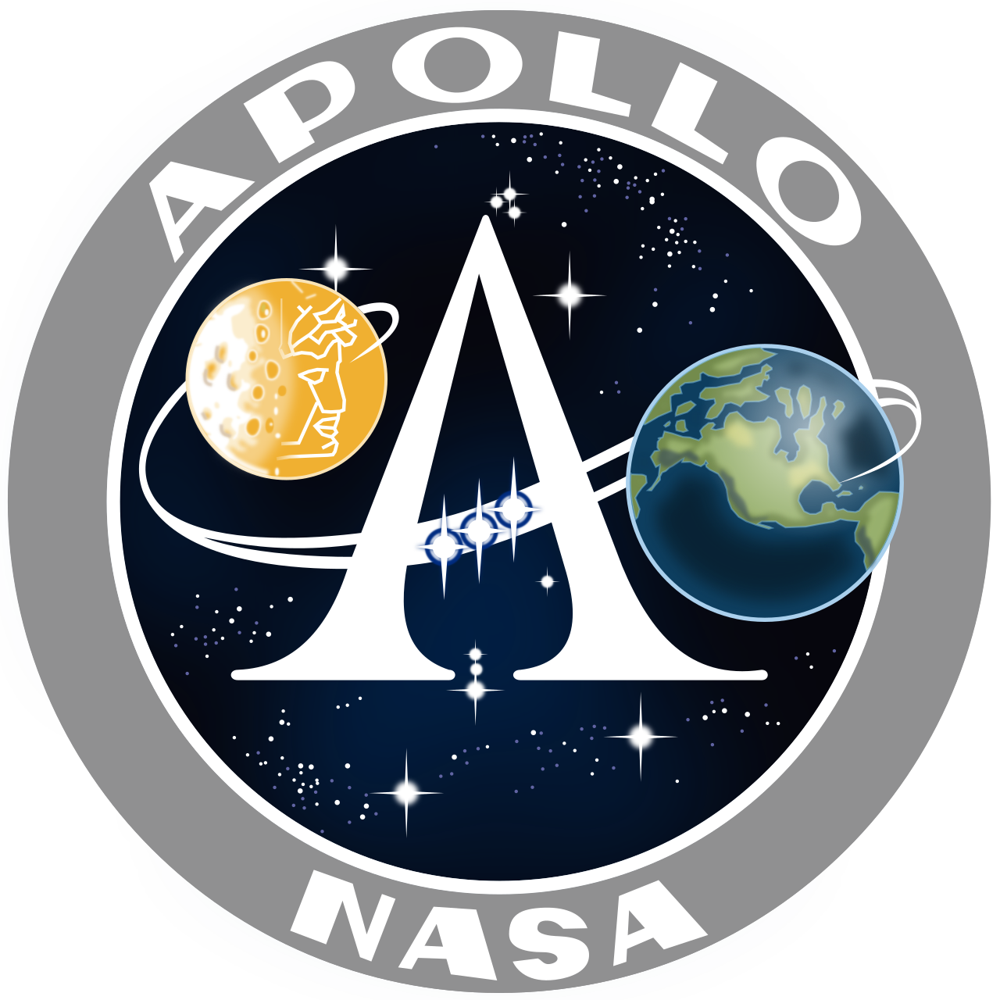

Esta wiki fue elaborada para recordar y conocer la historia del programa apolo, el cual fue un programa espacial de estados unidos que tenia como objetivo llevar a un hombre a la luna y traerlo de vuelta a la tierra de manera segura.